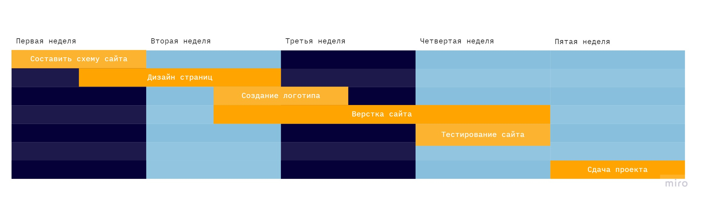
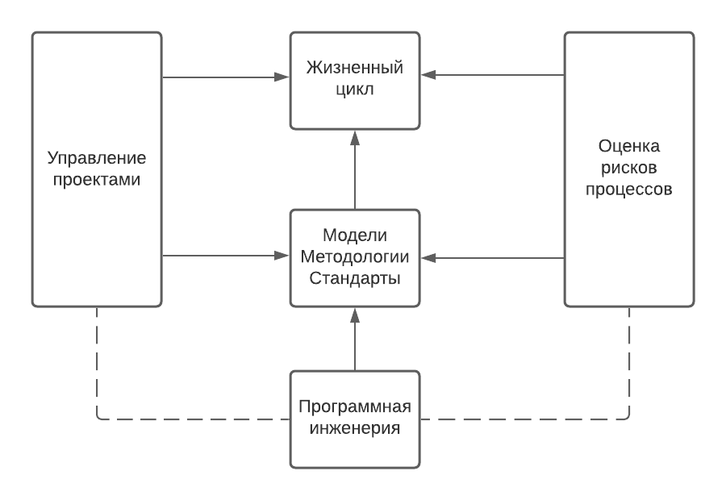
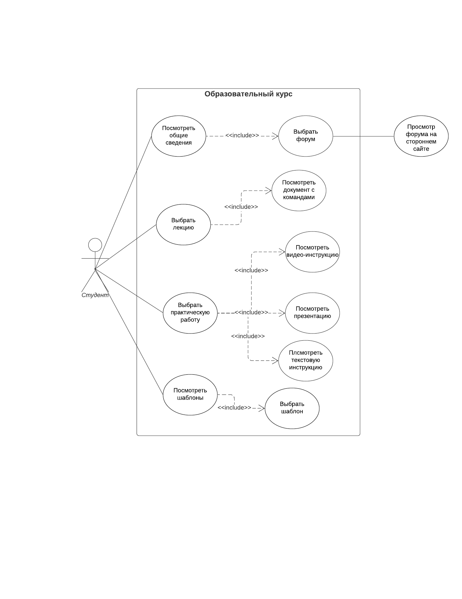

Организация электронной образовательной среды
Управление программными проектами
Диаграмма Гантта

Анализ современных средств для быстрого прототипирования сайта
Жизненный цикл

Визуализация данных и инфографика
Вариативная самостоятельная работа 2
Инвариантная самостоятельная работа 2
Вариативная самостоятельная работа 1
Инвариантная самостоятельная работа 1.1
Инвариантная самостоятельная работа 1.2
Практикум по программированию
UML-диаграмма
 Лабораторная работа № 4. Репозиторий
Лабораторная работа № 4. Видео-отчет
Лабораторная работа № 5. Репозиторий
Лабораторная работа № 5. Видео-отчет
Лабораторная работа № 6. Репозиторий
Лабораторная работа № 6. Видео-отчет